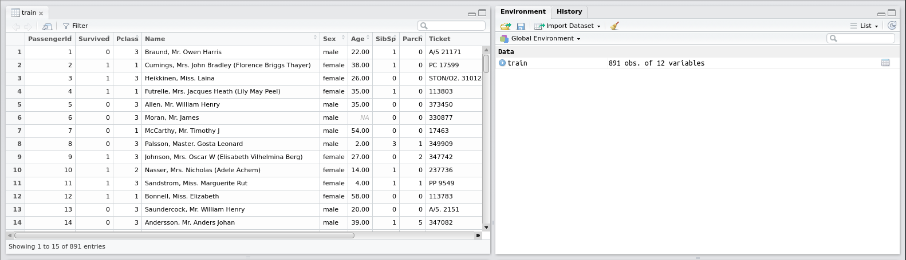
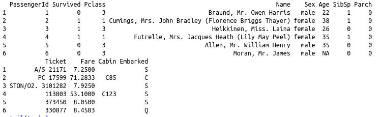
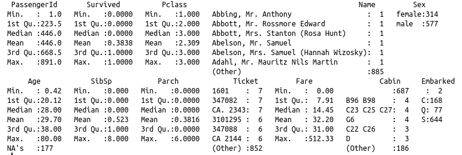

In order to work on real data the first thing we need to learn is how to read from files.
Working directory
The working directory is the where R looks if we tell it to work woth a file, either to load or save data (unless we tell it otherwise).
Let's see what the current working directory is:
> cwd()
In OS X or Linux the result should look like:
[1] "/home/your_username/"
On Windows it should look more like:
[1] "C:\Users\your_username"
It is a good idea to use a separate directory for all of your projects.
To change the working directory you can either use the command setwd or the Files tab of the bottom right pane in R Studio.
To do the latter, navigate to the folder you want to use for this tutorial (you can create a new one using the New Folder option if you wish).
Then go to the More option and select Set As Working Directory. You will see the setwd command used appears in the Console.
Reading a file
Download the file titanic-train.csv and save it into your working directory. This data was the training set for the Kaggle Titanic challenge.
> train <- read.csv('titanic-train.csv')
You should now see an entry for train in the Environment pane under the Data heading.
Click on this line and a new pane will appear above the Console showing the contents of the train variable as a table, something like this:

Examining the data
You can use the commands head and tail to view the first or last six lines of the data:
> head(train)

Notice how when more columns are provided in the data than there is space to display the rows are split and referenced using an index/row name - the number before the data on each line.
Try using the help to find out how to display a different number of lines.
The names command lists all of the columns in the data:
> names(train)
[1] "PassengerId" "Survived" "Pclass" "Name" "Sex" "Age" "SibSp" `
[8] "Parch" "Ticket" "Fare" "Cabin" "Embarked"
A quick overview of the data can be obtained using summary:
> summary(trains)

A few things can be seen very easily in this summary - for example there are a lot of NAs in the Age column (177 in fact). In this case, this isn't an actual NA in the input file. R has recognized a blank line in a numerical column and replaced it with NA.
To access all values from a particular column we use the $ syntax.
To see all the values from the Age column use:
> train$Age
Challenge - reading a tab separated file
Download the file titanic-gendered.csv.
Try to load it using read.csv (remember to copy or move it to your working directory).
Do the columns produced look sensible?
Try using ?read.csv to get help to read this file correctly.
You will need to know that 'whitespace' characters are often encoded using what are called escape characters.
For example, in R the escape character is \.
Tab is encoded as \t.